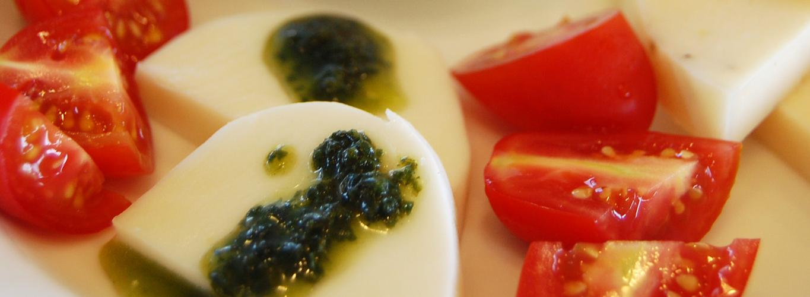

世界を変えるチーズを作ろう
チーズ職人養成学校「チーズアカデミーTOKYO」

チーズ職人養成学校「チーズアカデミーTOKYO」
チーズアカデミーは、チーズ職人養成学校です。
チーズの素晴らしさを、自給自足を通じて、できるだけ多くの人に知っていただきたい。
そして、食卓にはいつもチーズがあった、あの頃の当たり前をこの手で取り戻したい。
そんな思いから、チーズ職人養成学校「チーズアカデミーTOKYO」は歩みを始めています。
卒業後、チーズ自給自足のバックアップはもちろんのこと、
チーズ職人への就職・転職もサポートします。


未経験からでもスタートができるよう、カリキュラムは多くの専門家や 役チーズ職人のアドバイスのもと、作られました。

チーズアカデミーでは、本格的な農園を使った実地研修を 行うことができます。プロとして活躍するチーズ職人も 使用するような、広大で環境も整った農園を余すところ なく使い、卒業時には本格的なチーズを自分の力で作れる 実践力の養成を目指します。

チーズ作りには、しっかりとした食に関する知識が 欠かせません。チーズアカデミーでは、一講師陣による チーズ作りに必要ないろはを余すところなく学べます。 チーズそのものでなく、栄養学全般を学ぶことも 実践力の養成を目指します。

チーズアカデミーでは最後の2ヶ月間で卒業制作を実施。 卒業制作として、チーズ作りを実際に行います。卒業後、 一般参加によるティスティング審査があるため、作り手の 目線だけでなく、消費者の目線から、卒業制作作品としての チーズを、しっかりと評価いただくことができます。
学校名
チーズアカデミーTOKYO
所在地
〒107-0061東京都港区北青山3-5-6 青朋ビル2F
TEL
03-1234-5678
FAX
03-1234-5679
info@cheese-academy.com
説明会お申込み・問い合わせ
ぜひ1度、足を運んでみませんか。説明会は随時開催中その他、お問い合わせもお気軽にどうぞ。お待ちしております。
※チーズアカデミーは実際には存在しません。間違っても問い合わせしないようお願いいたします。